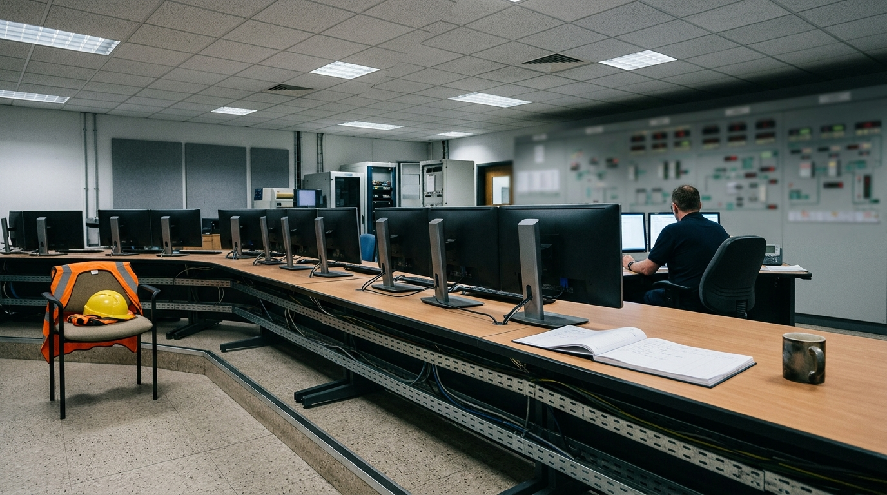

Deep technical insight for safer, more reliable and more secure industrial operations.
DeepTsight combines hands-on control systems and E&I engineering experience with practical OT cybersecurity and reliability thinking to solve complex operational challenges without losing sight of plant availability, lifecycle value or implementation reality.
- Based
- Perth, Western Australia
- Disciplines
- Control systems, OT security, segregation, reliability
- Standards
- ISA/IEC 62443
- Engagement
- Founder-led

-
Qualification
Master's degree, instrumentation, control systems and automation
Edith Cowan University
Pending verification -
Registration
Chartered Professional Engineer (CPEng)
Engineers Australia
Pending verification -
Certification
ISA/IEC 62443 Expert
International Society of Automation (ISA)
Pending verification -
Certification
Certified Automation Professional (CAP®)
International Society of Automation (ISA)
Pending verification
Core capabilities
One practitioner across four disciplines, so each recommendation accounts for the other three.
Control systems and E&I engineering
PLC, DCS and electrical instrumentation engineering for continuous process plants and critical utilities.
Reduce delivery risk, improve operability and integrate change within live industrial environments.
- Functional design specifications (FDS)
- I/O assignment and loop schematics
- Factory acceptance testing (FAT) protocols
OT cybersecurity and network architecture
ISA/IEC 62443-aligned security architecture, asset visibility and segmentation for live industrial control networks.
Improve visibility, segmentation and resilience with controls that respect plant availability.
- ISA/IEC 62443 gap assessment
- Passive asset inventory and taxonomy
- Zone and conduit design specification
IT/OT segregation
Defensible separation between corporate and control networks, without breaking essential data flows.
Reduce exposure while preserving the operational data flows and supportability the plant depends on.
- Industrial DMZ architecture specification
- Historian and jump host broker design
- Cutover sequencing protocol
Plant reliability and asset lifecycle
Engineering analysis, failure mode risk reduction and lifecycle optimisation for ageing automation and electrical assets.
Improve resilience, prioritise expenditure and balance technical risk against lifecycle cost.
- Obsolescence audit and FMECA
- 10-year technology roadmap
- CAPEX vs OPEX prioritisation matrix
Why DeepTsight
Cybersecurity advice can recommend controls that disrupt plant availability. Reliability studies can lack hands-on control system and communications depth. Engineering upgrades can treat cybersecurity as an afterthought.
DeepTsight was founded to bring these disciplines together under one senior practitioner.
-
Founder-led accountability
You work directly with the practitioner who assesses, designs and validates the solution.
-
Site-grounded judgement
Recommendations are shaped by site experience on operating assets, not by theory alone.
-
Integrated disciplines
Each recommendation weighs control logic, security segmentation and asset lifecycle together.
Operational problems addressed
The situations that bring clients to a conversation, and the engineering response to each.
| P1 | Complex brownfield upgrades | Planning control system cutovers around scheduled turnaround windows, so the upgrade does not become the outage. |
|---|---|---|
| P2 | Uncontrolled network convergence | Replacing flat or multi-homed connections between corporate IT and control networks with a defined, supportable boundary. |
| P3 | Standards and regulatory obligations | Translating ISA/IEC 62443 and SOCI Act obligations into engineering remediations that asset owners can sustain. |
| P4 | Automation obsolescence and spares risk | Building defensible replacement roadmaps for ageing control systems and field instrumentation before a failure forces the decision. |
A method built around a running plant
Four stages, each ending in a deliverable the plant can check before the next begins.
-
A1 · 01
Assess
Establish the real current state: cabinets, logic, network flows and operating constraints.
-
A2 · 02
Architect
Produce functional specifications, zone and conduit definitions and cutover protocols.
-
A3 · 03
Implement
Stage and test configurations before site arrival, so commissioning confirms rather than discovers.
-
A4 · 04
Assure
Commission during planned windows, validate every change and hand over as-built documentation.
[PLACEHOLDER] Anonymised project summary
[PLACEHOLDER] Control system modernisation on an operating generation asset.
TODO(CLIENT): approved outcome wording and disclosure permission.
[PLACEHOLDER] Anonymised project summary
[PLACEHOLDER] Network segregation aligned to ISA/IEC 62443 zones.
TODO(CLIENT): approved outcome wording and disclosure permission.
Based in Perth, working across critical infrastructure
Operators of critical infrastructure and heavy industry.
- Heavy industry
- Resources
- Utilities
- Critical infrastructure
- [PLACEHOLDER] Service area — TODO(CLIENT) (OPEN-03)
Fig. 02 — Port and processing infrastructure, Western Australia. Representative image.
Talk through an operational challenge
Speak directly with Deepak Pazhoor about control systems, OT security architecture or plant reliability.
Please do not include site names, network details or vulnerability information in an enquiry.